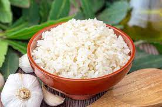

Arroz

300x168 px
Arroz blanco para 1 persona
ingredientes
- 1 diente de ajo
- 1 cucharada de aceite de oliva
- 300g de arroz redonde de grano corto
- 750ml de agua o caldo caliente(de verdura, pollo)
- 1 hoja de laurel
- sal
metodo de preparacion
- Pelar los ajos, machacarlos ligeramente, ponerlos en la sartén con el aceite y dorar ligeramente
- En ese mismo aceite tiramos los 300gr de arroz hasta que los granos se vuelvan brillantes
- Cubrir con el agua caliente, añadir el laurel y salar
- Cocer a fuego medio el tiempo indicado en el paquete
- Tapar y dejar reposar dos minutos
- Retirar los ajos y el laurel y separar los granos con un tenedor